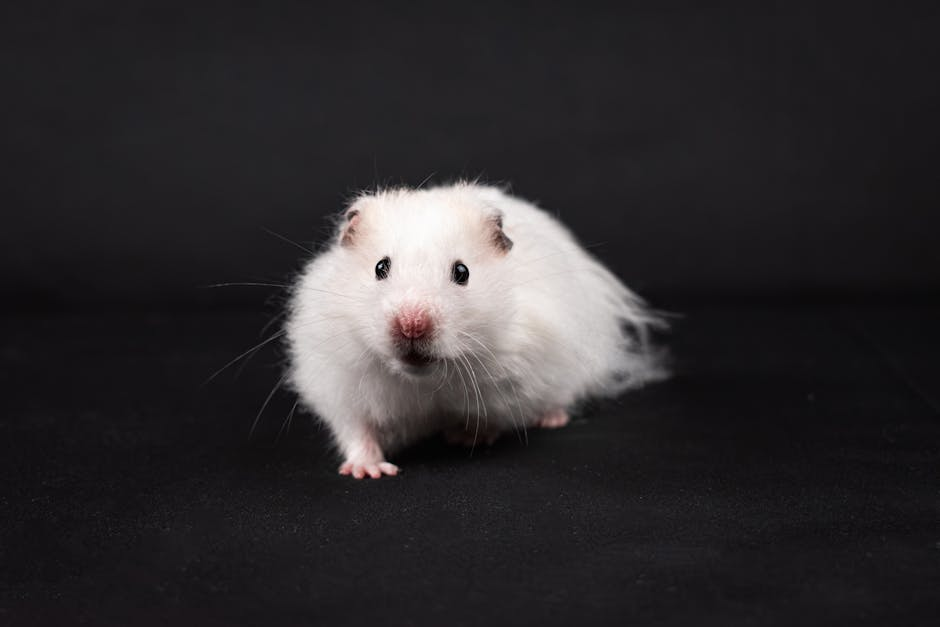
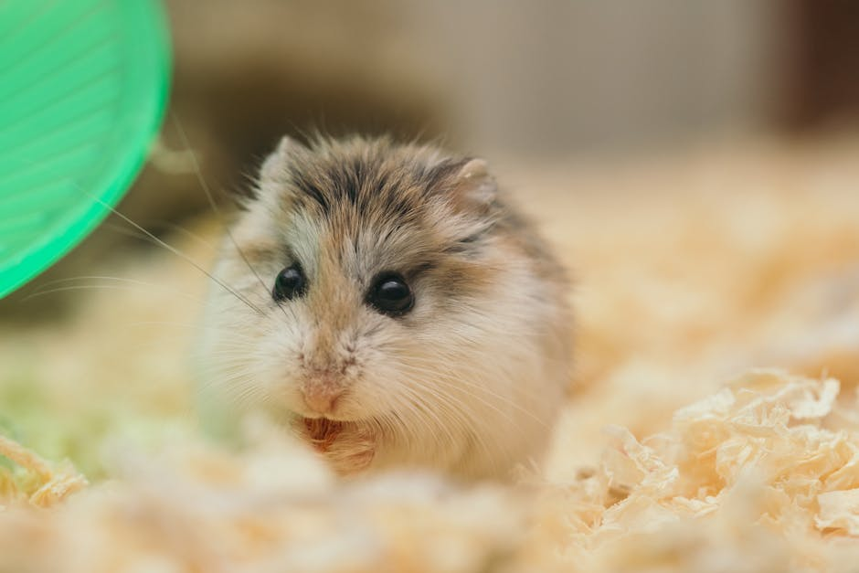
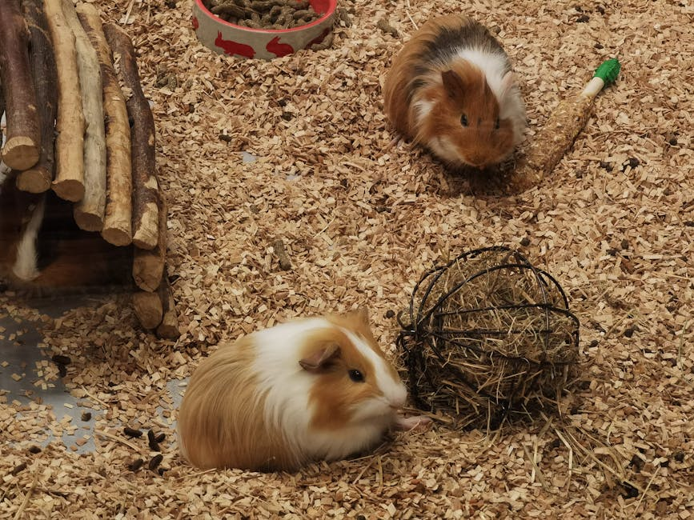
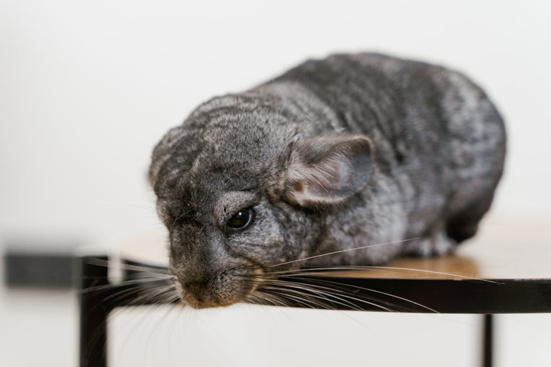
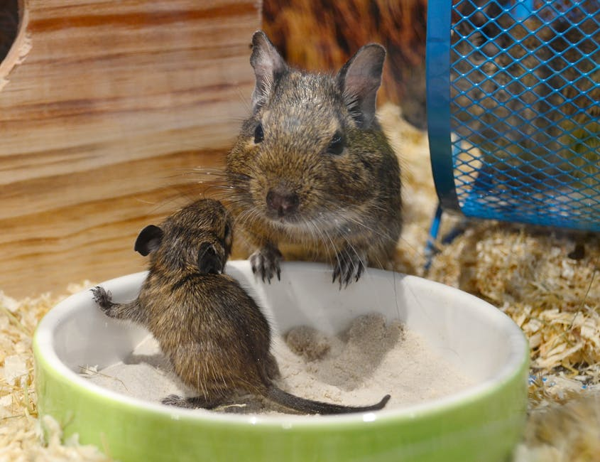
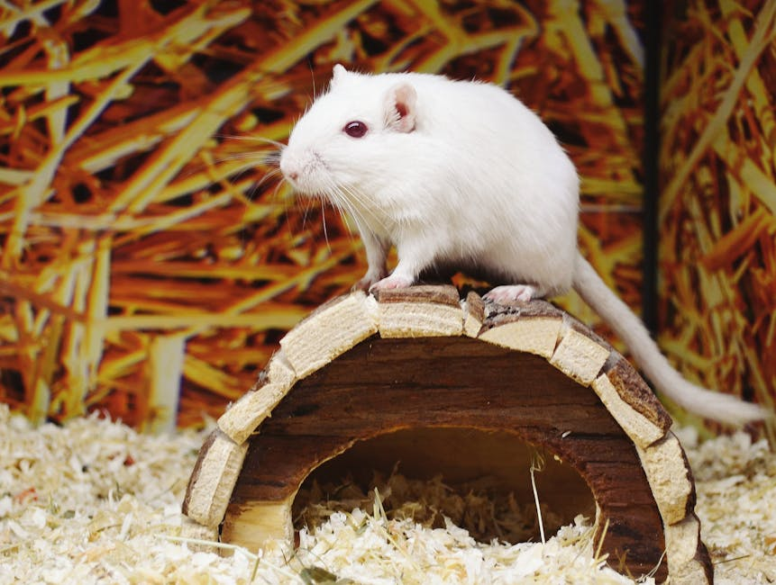

Početna · Kategorije · Glodari
Glodari
Hrčci, zamorčići, sitni glodari za porodicu i izložbeni krug. Najpopularniji „prvi" ljubimac za decu — uz veliku odgovornost. Pregled vrsta, smeštaj i ishrana.
Hrčci, zamorčići, sitni glodari za porodicu i izložbeni krug. Najpopularniji „prvi" ljubimac za decu — uz veliku odgovornost. Pregled vrsta, smeštaj i ishrana.

Baza vrsta · 5 priznatih

Jednostan smeštaj · 12–18 mes.

Patuljasti · najmanji · brz

Patuljasti · vitak · pitomljiv

Patuljasti · sezonska boja

Društveno · grupno držanje

Velik kavez · živi 15+ god.

Dnevni · grupno · bez šećera

Dnevni · u parovima
Saveti
Najveća greška koju roditelji prave je kupovina hrčka kao „lake" prve životinje za dete. Hrčci su noćne životinje, ne vole da budu češani po danu i imaju vrlo specifične potrebe.
Hrčak živi 1.5–3 godine. Ako želite kućnog ljubimca koji raste sa detetom — bolji izbor je zamorče (živi 6–8 godina) ili kunić.